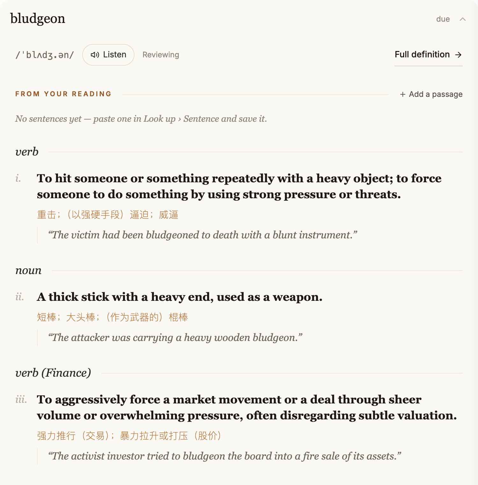
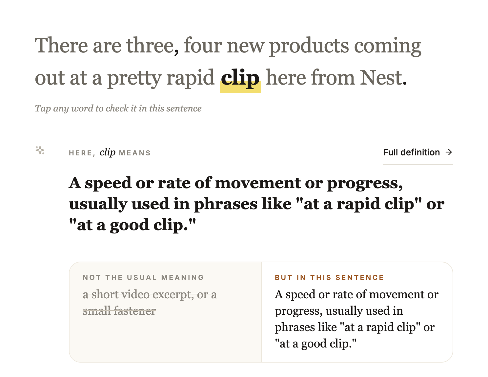
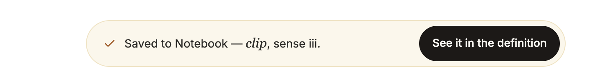
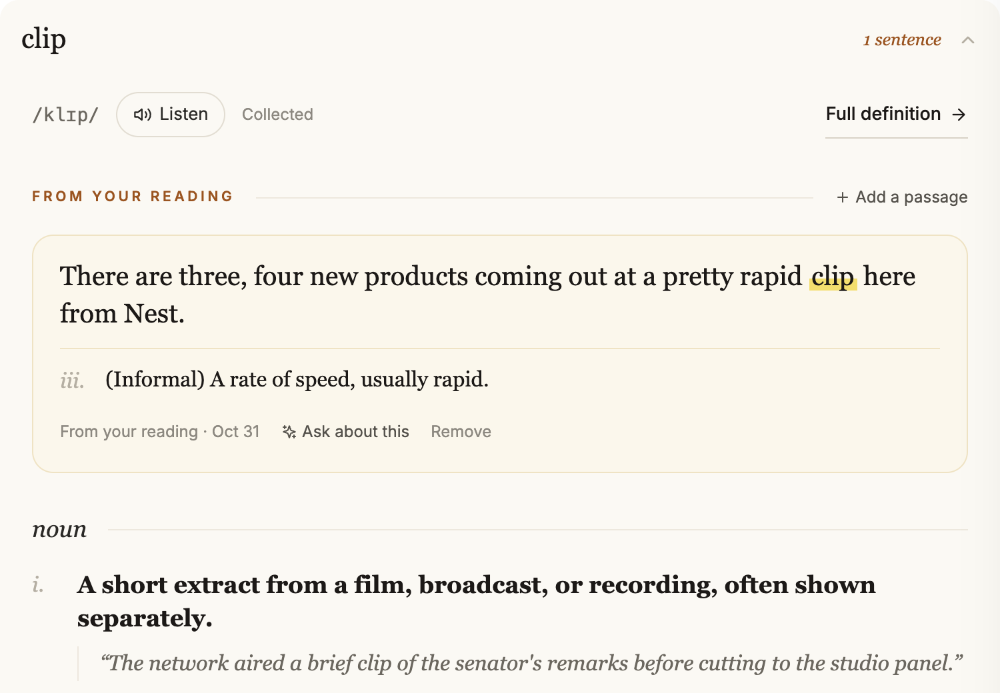
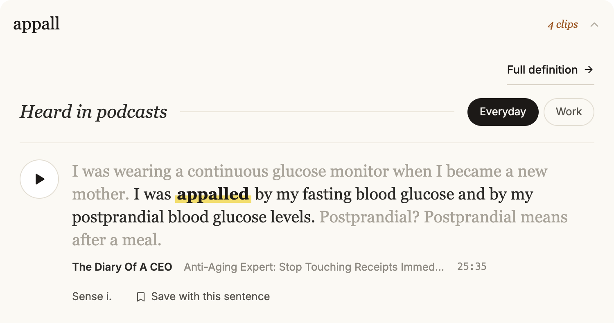
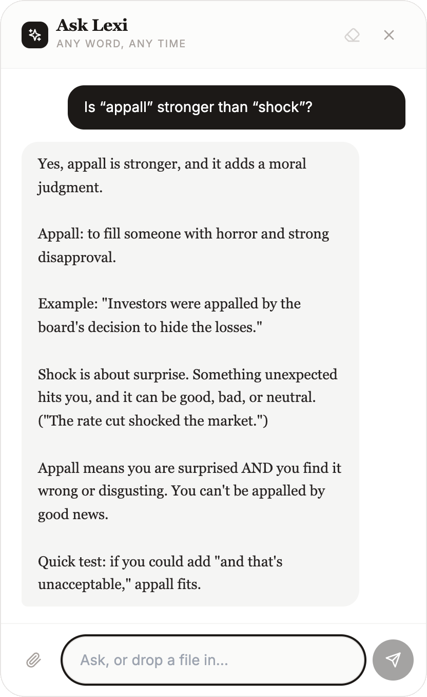
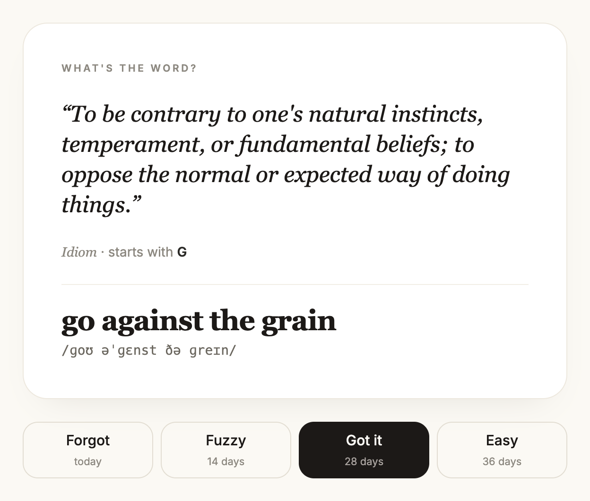

LexiAI
A custom English dictionary, tailored to how I study.
Clear definitions, every sense numbered
Each entry gives plain definitions with every sense numbered straight through, each with an example.

Which sense, in this sentence
Paste a sentence and LexiAI shows which sense the word has there, even a rare one, next to the usual meaning it isn't.


A notebook that grows into knowledge
Saved words collect their senses, the sentences I found them in and real podcast clips, and sync to LexiSpeak and Writing Station, where I practice saying and writing them until they stick.


Ask LexiAI about any word
A chat in the corner of every screen answers quick questions, like how two close words differ.

A short review every day
Due words come back on a spaced schedule, each answer sets the next date, and showing up daily keeps the streak going.
